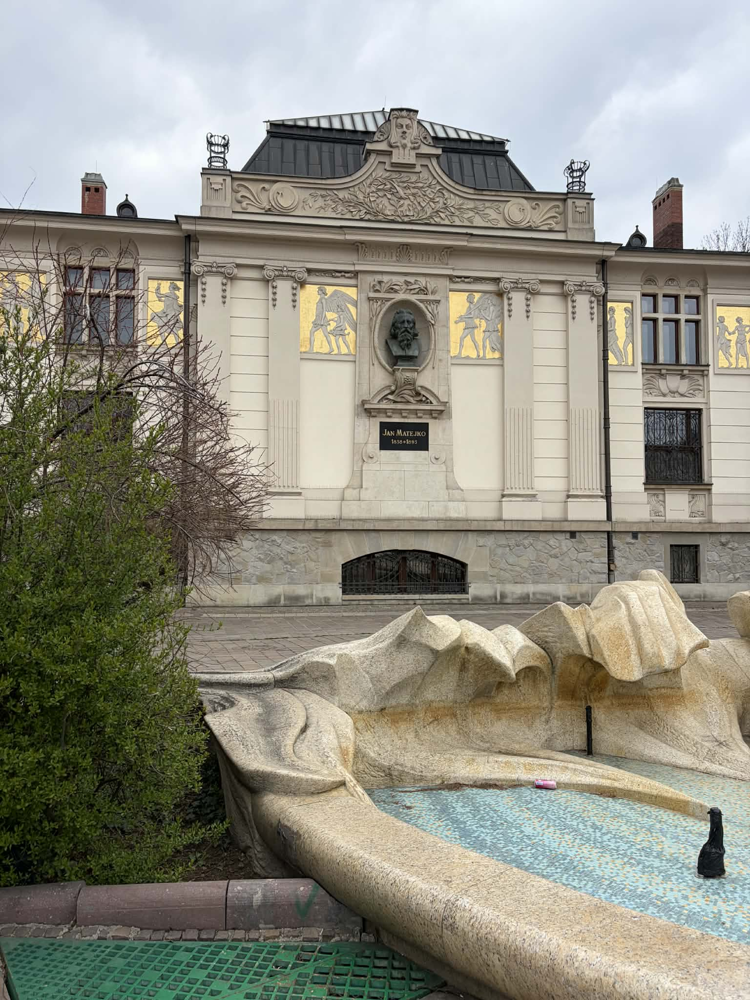
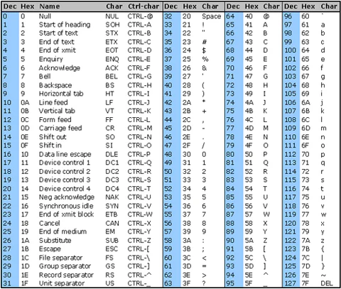

[LOG 001] [LOCALIZATION: "N/A"] SYSTEM: Połączenie ustanowione... SYSTEM: Witaj, agent@RR21. SYSTEM: Odczytano zaszyfrowaną wiadomość. SYSTEM: Hasło zostało zakodowane w systemie binarnym. SYSTEM: Binary code [ASCII]: 01001100 01101011 00110001 00110101 00111000 00110001 00110000 SYSTEM: Konwersja danych jest wymagana, aby kontynuować. user@32#434: ...nie masz dużo czasu. user@32#434: ktoś już zaczął szukać skarbu wcześniej. SYSTEM: Wprowadź poprawny kod, aby uzyskać dostęp do dalszych logów.
[LOG 002] [LOCALIZATION: "Plac Szczepański"]

SYSTEM: Sygnał został przechwycony w tej strefie. SYSTEM: Wykryto fizyczny nośnik danych. user@32#434: patrz pod nogi. user@32#434: oni często ukrywają rzeczy tam, gdzie nikt nie patrzy. SYSTEM: Analiza wskazuje na metalowe elementy infrastruktury miejskiej. SYSTEM: Oznaczenia mogą zawierać kod dostępu. SYSTEM: Znajdź i odczytaj ciąg znaków. SYSTEM: To jedyna droga dalej. user@32#434: jeśli zobaczysz kogoś, kto też tego szuka… udawaj, że to przypadek.[LOG 003] [LOCALIZATION: "ERROR!"] SYSTEM: Błąd lokalizacji wykryty. SYSTEM: Moduł nawigacji niedostępny. SYSTEM: Inicjalizuję manualne instrukcje wyznaczania trasy... user@32#434: stare, nowe… nieważne. user@32#434: wszystko sprowadza się do jednej rzeczy — wartości. SYSTEM: Kierunek: WSCHÓD → 37 kroków. SYSTEM: Następnie: POŁUDNIOWY WSCHÓD → kontynuuj marsz. SYSTEM: Obszar o wysokiej gęstości obiektów. SYSTEM: Wiele źródeł światła wykrytych w strefie. user@32#434: licz je. user@32#434: wszystkie. user@32#434: ktoś kiedyś źle policzył… user@32#434: i nigdy nie znalazł tego, czego szukał. user@32#434: ta głupia maszyna rozumie tylko system binarny.
[LOG 004] [LOCALIZATION: "Narodowy Bank Polski"] SYSTEM: Wykryto powiązanie z zasobami finansowymi. user@32#434: szybko, niebieska tabliczka! SYSTEM: Przetwórz dane powiązane ze słowem kluczowym. user@32#434: system nie lubi spacji.
[LOG 005] [LOCALIZATION: "N/A"] SYSTEM: Ostatni komunikat przechwycony. SYSTEM: Szyfrowanie ... SYSTEM: Klucz : GA-DE-RY-PO-LU-KI SYSTEM: Wykryto kod ASCII. SYSTEM: Próba konwersji... SYSTEM: BŁĄD. SYSTEM: Format niezgodny. SYSTEM: Automatyczna konwersja → SYSTEM TRÓJKOWY... SYSTEM: 2200 2122 10002 2211 2222 2011 1120 1120 1120 1120 1120 user@32#434: coś się posypało… user@32#434: spróbuj ręcznie. user@32#434: systen przyjmuje tylko kod ascii w wersji hexadecymalnej, namęczyłem się trochę zanim to odkryłem user@32#434: o i nie zapomnij o braku spacji. SYSTEM: Wprowadź końcowy ciąg.

SYSTEM: Lokalizowanie skarbu ... SYSTEM: Liczenie koordynatów ... SYSTEM: Renderowanie mapy ...